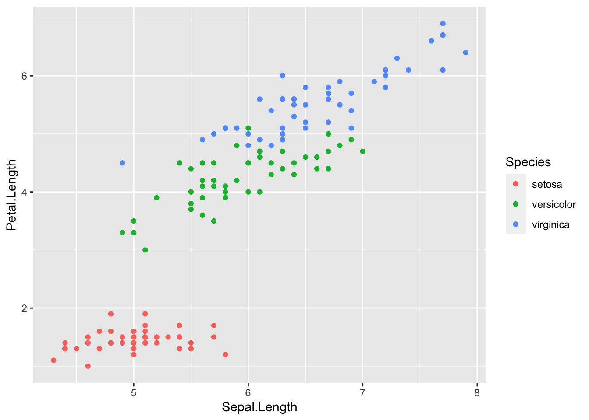

Last updated: 2020-10-21
Checks: 7 0
Knit directory: rr_tools/
This reproducible R Markdown analysis was created with workflowr (version 1.6.2). The Checks tab describes the reproducibility checks that were applied when the results were created. The Past versions tab lists the development history.
Great! Since the R Markdown file has been committed to the Git repository, you know the exact version of the code that produced these results.
Great job! The global environment was empty. Objects defined in the global environment can affect the analysis in your R Markdown file in unknown ways. For reproduciblity it’s best to always run the code in an empty environment.
The command set.seed(20201021) was run prior to running the code in the R Markdown file. Setting a seed ensures that any results that rely on randomness, e.g. subsampling or permutations, are reproducible.
Great job! Recording the operating system, R version, and package versions is critical for reproducibility.
Nice! There were no cached chunks for this analysis, so you can be confident that you successfully produced the results during this run.
Great job! Using relative paths to the files within your workflowr project makes it easier to run your code on other machines.
Great! You are using Git for version control. Tracking code development and connecting the code version to the results is critical for reproducibility.
The results in this page were generated with repository version 3e16a7b. See the Past versions tab to see a history of the changes made to the R Markdown and HTML files.
Note that you need to be careful to ensure that all relevant files for the analysis have been committed to Git prior to generating the results (you can use wflow_publish or wflow_git_commit). workflowr only checks the R Markdown file, but you know if there are other scripts or data files that it depends on. Below is the status of the Git repository when the results were generated:
Ignored files:
Ignored: .Rproj.user/
Untracked files:
Untracked: README.html
Untracked: analysis/exercise.rmd
Untracked: figure/
Note that any generated files, e.g. HTML, png, CSS, etc., are not included in this status report because it is ok for generated content to have uncommitted changes.
These are the previous versions of the repository in which changes were made to the R Markdown (analysis/workbooks.rmd) and HTML (docs/workbooks.html) files. If you’ve configured a remote Git repository (see ?wflow_git_remote), click on the hyperlinks in the table below to view the files as they were in that past version.
| File | Version | Author | Date | Message |
|---|---|---|---|---|
| Rmd | 3e16a7b | jean997 | 2020-10-21 | add pipelines, programming, workbooks |
Dynamic reports mix text and code. The key feature of a dynamic report is that when the document is “rendered” all of the code is executed in order from a clean slate. So the rendering of the document is a testament to the reproducibility of its contents.
Dynamic reports can be used for entire analyses or just for summarizing a larger analysis that had to be run on a compute cluster. They are a convenient way to insert plots and summaries into your text, save you the headache of accurately copying numbers over and mean that you always know the version of the analysis or data that goes with your report.
I have used two methods to created dynamic reports, both using R. The first is R Markdown (see R Markdown Cookbook) which using markdown syntax which is simple and intuitive. The second is Sweave (intro here) which integrates R code with LaTex syntax giving you access to a wider array of formatting options. In the past several years I have preferred R Markdown because it is faster to write and easier to render into multiple different formats (it is easy to change from html to pdf or vice versa). Both Sweave and R Markdown are powered by knitr so code display options are the same between the two.
For Python there is Juptyr Notebook/Jupityr Lab which I believe has very similar functionality to R Markdown.
You will probably use dynamic reports most often when you are summarizing your analysis for yourself or for someone you want to share it with. It is possible to make dynamic reports look more or less “professional” by controlling what output to show. For your adviser you might let all the code show while for someone who cares less about the code you might hide most of it and only show plots and formatted tables.
I have used R Markdown and Sweave for “final” reports that I sent to collaborators (I think I also used one for my applied exam in graduate school) but I don’t use them for manuscripts that go to journals because, typically journals either want the source LaTex code to compile all on its own without running anything extra or they want a Word document. One tool that is useful for these cases is the xtable R package which allows you to print R tables out as LaTex formatted code. You might use xtable inside a dynamic report to make it look nice or you might copy the output and paste it into your (static) LaTex file.
This whole website is actually made out of dynamic reports that are written in R Markdown and then stitched into a website using workflowr (more below). So far we haven’t actually used any R code. Here is a bit of code to give a flavor of what that looks like.
Here is a plot of the famous iris data set which is one of R’s built in data sets.
library(ggplot2)
data(iris)
head(iris) Sepal.Length Sepal.Width Petal.Length Petal.Width Species
1 5.1 3.5 1.4 0.2 setosa
2 4.9 3.0 1.4 0.2 setosa
3 4.7 3.2 1.3 0.2 setosa
4 4.6 3.1 1.5 0.2 setosa
5 5.0 3.6 1.4 0.2 setosa
6 5.4 3.9 1.7 0.4 setosaggplot(iris) + geom_point(aes(x=Sepal.Length, y = Petal.Length, color=Species))
By default, R Markdown will display the code followed by the output but if we wanted a very clean look, we could suppress showing the code. There are tons of code chunk options that control how code and results are displayed. Check here for a full list. These will also work with Sweave.
It is also possible to use R code in line. For example the text
The Iris data have `r nrow(iris)` observations.
renders as
The Iris data have 150 observations.
To create an R Markdown document using RStudio, just choose the R Markdown option under File -> New File. In RStudio you can then view your document by clicking the “Knit” button. If you want to use a different development environment or for some reason can’t use RStudio, simply write you R Markdown document like any other text file and then render it using rmarkdown::render().
A good command to know about is knitr::purl which will extract only the code bits from your R Markdown or Sweave file and write them to their own R script.
workflowr, developed by John Blischak is one of my favorite reproducible research tools! workflowr helps you put many R Markdown files describing analyses together into a research website.
This is a great way to aggregate all of the analyses you’ve done for a project in one place so it is easy to see and share your work. It is also useful for making a companion site for your paper which may ultimately just be a cleaned up version of the research site you’ve been using throughout the project.
Here is an example of paper companion site built using workflowr.
R Markdown Cookbook by Yihui Xie, Christophe Dervieux, and Emily Riederer
workflowr developed by John Blischak
sessionInfo()R version 4.0.3 (2020-10-10)
Platform: x86_64-pc-linux-gnu (64-bit)
Running under: Ubuntu 18.04.5 LTS
Matrix products: default
BLAS: /usr/lib/x86_64-linux-gnu/openblas/libblas.so.3
LAPACK: /usr/lib/x86_64-linux-gnu/libopenblasp-r0.2.20.so
locale:
[1] LC_CTYPE=en_US.UTF-8 LC_NUMERIC=C
[3] LC_TIME=en_US.UTF-8 LC_COLLATE=en_US.UTF-8
[5] LC_MONETARY=en_US.UTF-8 LC_MESSAGES=en_US.UTF-8
[7] LC_PAPER=en_US.UTF-8 LC_NAME=C
[9] LC_ADDRESS=C LC_TELEPHONE=C
[11] LC_MEASUREMENT=en_US.UTF-8 LC_IDENTIFICATION=C
attached base packages:
[1] stats graphics grDevices utils datasets methods base
other attached packages:
[1] ggplot2_3.3.2 workflowr_1.6.2
loaded via a namespace (and not attached):
[1] Rcpp_1.0.5 pillar_1.4.6 compiler_4.0.3 later_1.1.0.1
[5] git2r_0.27.1 tools_4.0.3 digest_0.6.25 evaluate_0.14
[9] lifecycle_0.2.0 tibble_3.0.3 gtable_0.3.0 pkgconfig_2.0.3
[13] rlang_0.4.7 rstudioapi_0.11 yaml_2.2.1 xfun_0.18
[17] withr_2.3.0 stringr_1.4.0 dplyr_1.0.2 knitr_1.30
[21] generics_0.0.2 fs_1.5.0 vctrs_0.3.4 tidyselect_1.1.0
[25] rprojroot_1.3-2 grid_4.0.3 glue_1.4.2 R6_2.4.1
[29] rmarkdown_2.3 farver_2.0.3 purrr_0.3.4 magrittr_1.5
[33] whisker_0.4 backports_1.1.10 scales_1.1.1 promises_1.1.1
[37] ellipsis_0.3.1 htmltools_0.5.0 colorspace_1.4-1 httpuv_1.5.4
[41] labeling_0.3 stringi_1.5.3 munsell_0.5.0 crayon_1.3.4